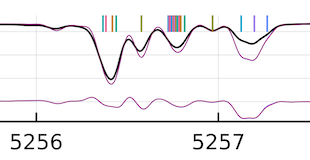
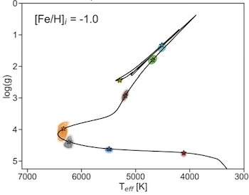
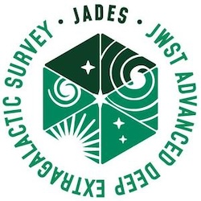

My research focuses on unraveling the inner workings of stars, spanning from modeling their structure and evolution to predicting accurate observable properties, and refining techniques for determining stellar parameters with greater precision. I am a member of the Conroy Group, as well as one of the founding member and lead organizers of the AstroAI group at the CfA.
Below you will find a summary of my key projects, CV, and links for my ongoing collaborations.
Full ADS Index
Via Survey
What is the nature of dark matter?
What are the limits of galaxy formation?
How does gas cycle into and out of galaxies?
H3
Tracing the assembly history of the Milky Way galaxy by measuring the 6D phase space and chemical space structure of the stellar halo.

Fitting All the Lines (FAL)
The largest empirical calibration of atomic and molecular transition data for synthetic stellar spectra.

Accelerating Stellar Inference
Integrating new approaches into building and applying stellar models.

JWST Advanced Deep Extragalactic Survey (JADES)
The largest deep survey JWST program producing infrared imaging and spectroscopy at unprecedented depth of ultra-high redshift galaxies.
{kind=link}
MARMOT
A new in-depth approach to build self-consistent and homogeneous parameters for young Milky Way populations.
AstroAI
Introducing novel AI and machine learning methods to traditional astrophysical problems.
Get In Touch
Contact me if you would like to chew the fat about any of my work. I am always happy to chat about potentially new collaborations!